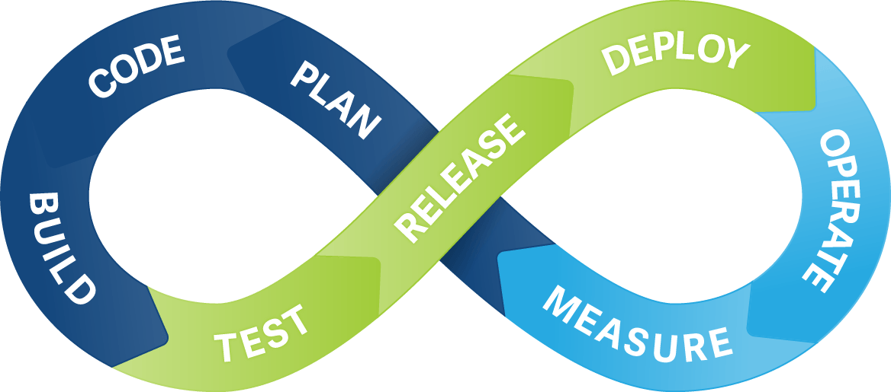
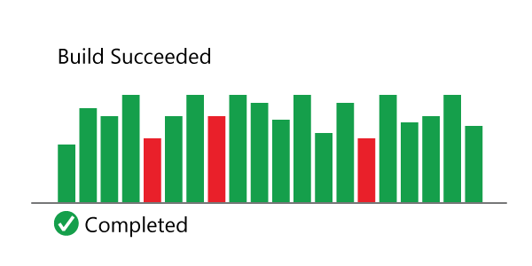
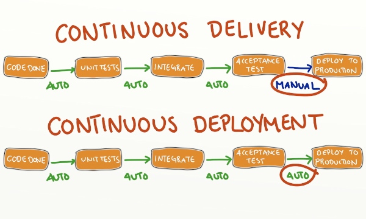
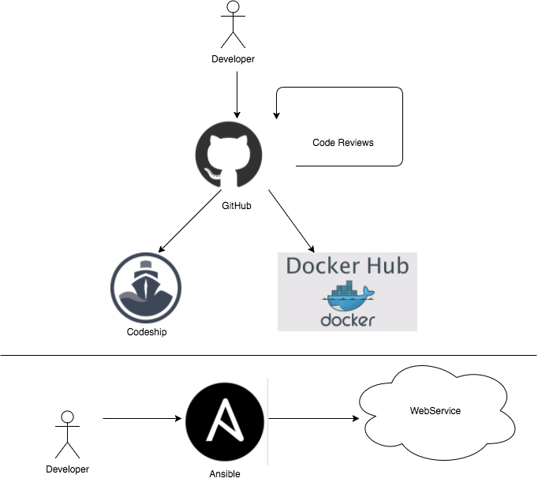
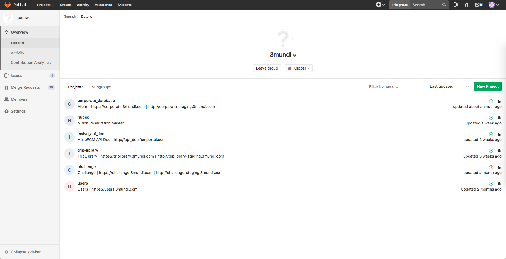
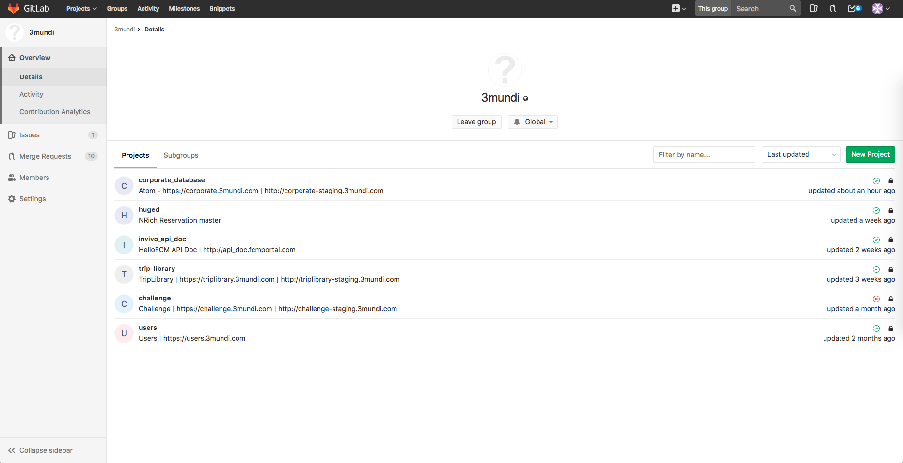
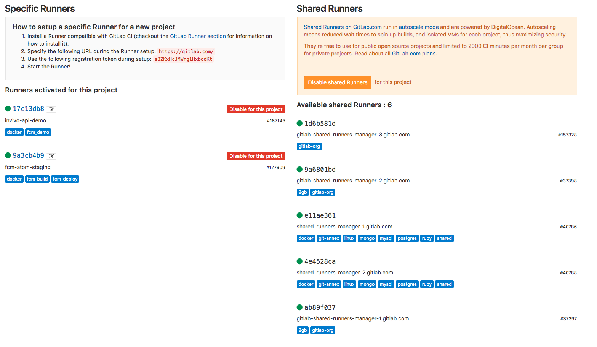
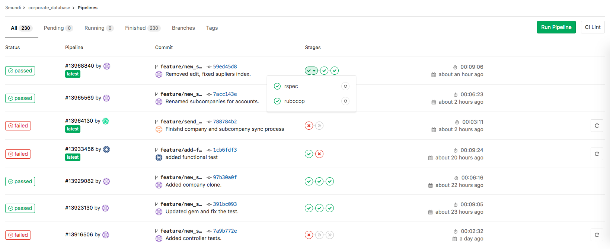

CI/CD and Gitlab
Guillermo Guerrero
Follow me on github:
https://github.com/ryanfox1985
November 16th, 2017
Continuous Integration
Continuous Integration (CI) is the process of automating the build and testing of code every time a team member commits changes to version control.
CD
Current suite
- Github
- Codeship
- DockerHub
- Ansible
Flow
Problems
- Time (testing, building images)
- Manual deployment
 

Gitlab Runners
CI with gitlab
- Docker in Docker
- View an example of gitlab_ci file
Gitlab Pipelines
How to manage the credentials
- DockerHub
- ssh keys